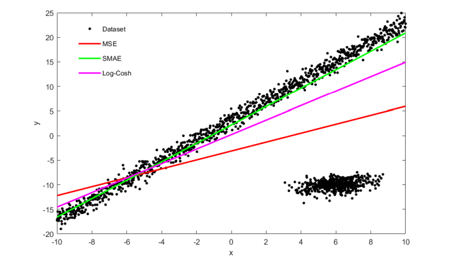

Yug D OswalI'm a SPAR Fellow and final year CS undergrad at VIT Vellore, India. I'm most recently working on:
My current research is around interpretability, safety, and catastrophic inheritance. I've previously worked (and try to continue) in theoretical/empirical ML and representation learning. I'm always open to discussing interests/goals/projects/anything! Feel free to reach out. I'm planning on pursuing a MS (PhD subject to planning). Currently (still) working towards the best 'me' I could think of. Email / Resume / Google Scholar / LinkedIn / GitHub |

|
Machine Learning Research |

|
Mathew Mithra Noel, Venkataraman MN, Yug D Oswal arXiv, 2023-25 Solved the computational bottleneck in higher order ANNs like quadratic neural nets (QNNs). Designed a reduced parameter (RP-QNN) and vectorized matrix forward/backward prop equations for RP-QNNs and QNNs. |

|
Mathew Mithra Noel, Yug D Oswal arXiv, 2024 Computing hyperstrips instead of hyperplanes in euclidean space. 4.6% accuracy gain on ImageNet, with 46.4% parameter reduction in VGG19. Enables smaller yet performant foundational models. |
|

|
Mathew Mithra Noel, Arindam Banerjee, Yug D Oswal, Geraldine Bessie Amali D, Venkataraman Muthiah-Nakarajan arXiv, 2024 Proposed SMAE and SQRT, MAE-like differentiable losses, which are robust to noisy input data and natural distribution shifts. Proposed novel classification losses and a customized loss scheduling algorithm for the same. |
Experience |

|
Bharat Dynamics Limited - Ministry of Defence, India
AI/ML Engineer Certificate Developed the primary prototype for an anti-UAV system involving object detection and tracking, along with a web app and a unique migratable deployment in isolated systems. |
|
|
ML Engineer Certificate Referred by Raghu Bala sir, a MIT AI Course Facilitator and Founder. Worked on developing and deploying pipelines such as agentic workflows, RAG, agentic tooling, chat history context aware, and guardrails for fine-tuned LLMs used in humanoid speech-capable autonomous agents serving de-addiction therapy. Also worked on classical ML POCs for clients in the insurance domain. |

|
University of Auckland, New Zealand | Signal Corporation Ltd
Project Lead Certificate Led an international project team and coordinated with mentor, team, university, and client. Worked on Named Entity Recognition, Geocoding, Incremental Clustering, and engineering an optimized comprehensive pipeline. Resolved 5 real-world issues for Signal Corp Ltd. |
Projects |

|
Developed a service to aid Alzheimer's and Dementia disease patients. Trained an emotion extraction model incorporating my novel loss function research and deployed local LLMs. Patients can create life-journals and relive memories based on vague remembrances of emotions and snippets of events they have spoken to the Rekindle companion. Currently being refurbished. |

|
Independently developed the backend for the Computer Society of India event website, Lasertag, held during the college fest Gravitas. Used by over 1000 students and developed using Node.js, Redis, MongoDB (Atlas), and integrated with CI/CD. |
Community or Volunteering |

|
Board Member, Research and Development Head I am the Research and Development Head of the Computer Society of India chapter at VIT. My work involves mentoring juniors, organizing and managing events, providing research opportunities, guiding research, and directing chapter activities and future directions. |
|
This website was produced from a template made by Jon Barron. |